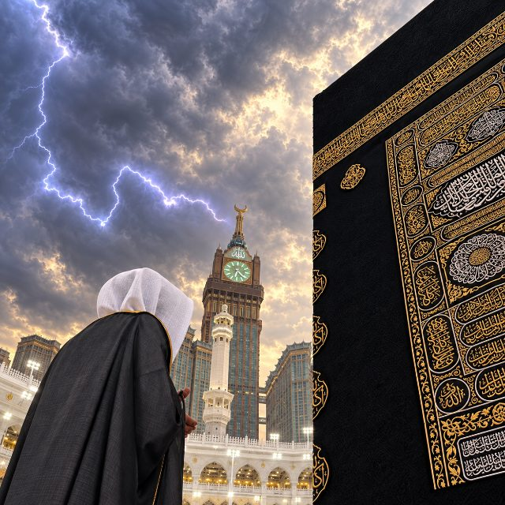

المفضّلة
كل التلاوات

ابدأ مكتبتك
الصق رابط تلاوة من يوتيوب، أو رابط ملف صوتي مباشر، أو اختر ملفًا من جهازك. كل شيء يُحفظ في هذا المتصفح وحده — بلا حساب وبلا سيرفر.
بحث
ابحث بالعنوان أو القارئ أو السورة أو الوسم.
مكتبتي
الإعدادات
المظهر
التشغيل
التخزين
نسخة احتياطية
تُحفظ الروابط والعناوين والقرّاء والوسوم والقصّ والترتيب والأغلفة المجلوبة. الصوت والصور التي جلبتها من جهازك تبقى في هذا المتصفح ولا تدخل في ملف النسخة.
التطبيق
لتثبيته: من قائمة كروم اختر «تثبيت التطبيق» أو «إضافة إلى الشاشة الرئيسية».
كيف يعمل
يوتيوب لا يمكن تنزيله. لا يرسل ترويسات CORS، وروابط بثّه موقَّعة، فلا صفحة ويب تحوّله إلى ملف بلا سيرفر وسيط. تلاوات يوتيوب تُشغَّل من يوتيوب، وتحتاج إنترنت، وتتوقّف عند إطفاء الشاشة — هذا قيد من يوتيوب لا حيلة فيه.
ما يعمل والشاشة مطفأة: ما نزّلته، وملفات جهازك، والروابط الصوتية المباشرة. هذه تُكمل وتنتقل للتالية وحدها، وتتحكّم بها من شاشة القفل.
كل شيء يُحفظ في هذا المتصفح وحده — بلا حساب، وبلا سيرفر، وبلا رفع.